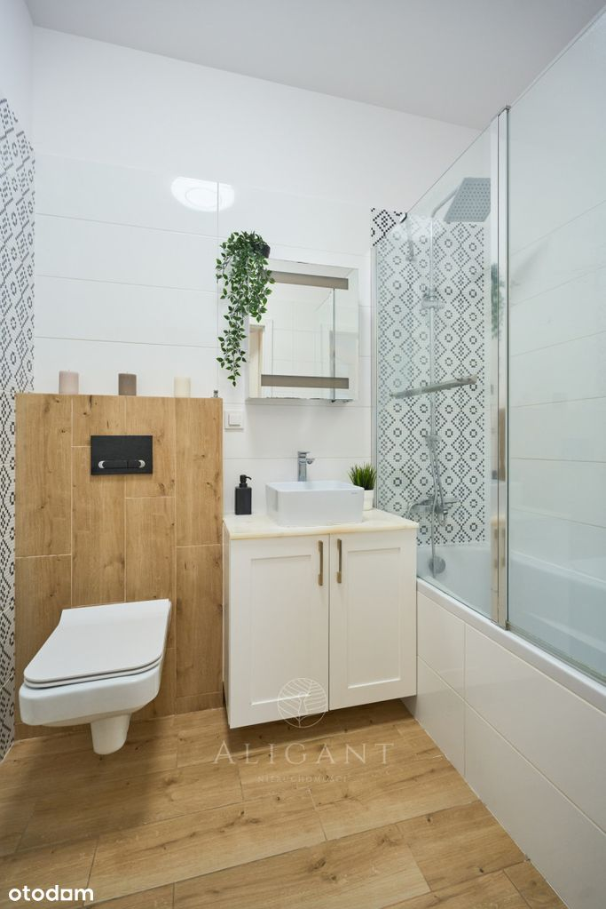
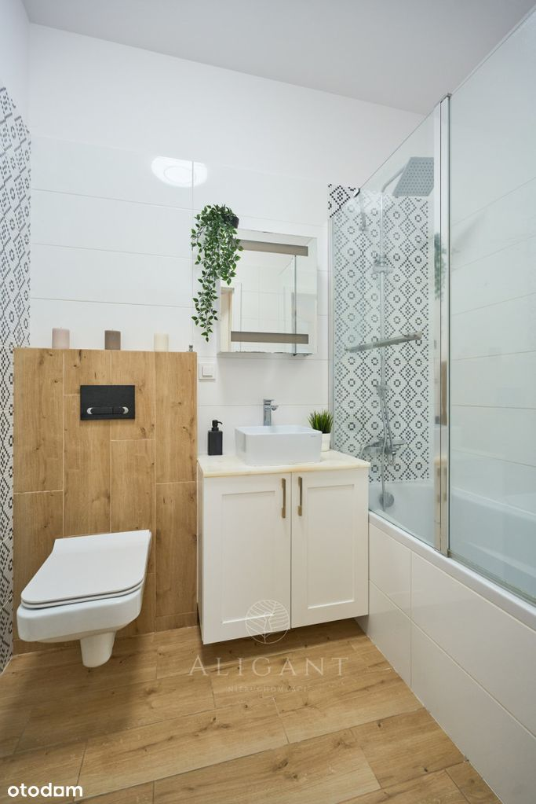

Aligant nieruchomości zaprasza do zapoznania się z ofertą:
W SKRÓCIE:
★ Targówek, ul. Ponarska 4
★ Rok budynku 2018 r.
★ Powierzchnia 60,05 m²
★ 3 pokoje (w tym salon z aneksem kuchennym) + balkon( 9m²)
★ Garaż + komórka lokatorska (płatne dodatkowo)
NIERUCHOMOŚĆ:
Mieszkanie znajduje się na 1 piętrze (3 piętrowy budynek z windą) Osiedle Wilno to ciekawy koncept urbanistyczny położony w prężnie rozwijającej się części Targówka. Ogrodzone osiedle posiada monitoring, dzięki czemu jest tu bezpiecznie. Na terenie inwestycji jest dużo terenów wspólnych, placów miejskich oraz alejek, które są bardzo zadbane. Osiedle charakteryzuje się niską zabudową wokół której znajdują się zadbane trawniki i tereny zielone o bujnej roślinności.
MIESZKANIE:
Lokal o powierzchni 60,05 m², składa się z 3 pokoi w tym przestronnego salonu z aneksem kuchennym, łazienki, przedpokoju oraz balkonu W pokojach na podłodze położone są panele. Do dyspozycji pozostaje pełne wyposażenie AGD wysokiej jakości. W budynku jest zamontowana winda, którą można również zjechać do hali garażowej. Do mieszkania przynależy miejsce parkingowe oraz komórka lokatorska w garażu podziemnym (płatne dodatkowo).
LOKALIZACJA:
Lokal zlokalizowany jest na nowym, stylowym osiedlu. Okolica jest cicha i spokojna. W promieniu kilkudziesięciu metrów jest wiele punktów handlowo-usługowych. Blisko osiedla znajdują się również supermarkety i kompleksy handlowe. Na spacer można się wybrać do sąsiadującego lasu lub nad Zalew Bardowskiego.
KOMUNIKACJA:
Lokalizacja jest świetna również ze względu na komunikację. Przy osiedlu deweloper wybudował stację PKP dla mieszkańców a stamtąd do Dworca Wileńskiego dojedziemy w 5 minut a stamtąd możemy przesiąść się np. do metra. Obok znajduje się również pętla autobusowa dzięki czemu mamy alternatywny transport.
To idealna propozycja dla osób ceniących sobie komfort, funkcjonalność oraz szybki
dostęp do miejskich atrakcji. Nieruchomość znajduje się na nowoczesnym, dobrze
utrzymanym osiedlu, co gwarantuje bezpieczeństwo i spokój. Mieszkanie wykonane
z wysokiej klasy materiałów. Lokalizacja zapewnia doskonałą komunikację z resztą miasta, co jest nieocenionym atutem dla aktywnie żyjących osób.
Zachęcam do obejrzenia wideoprezentacji:
Zapraszamy do kontaktu z naszym biurem w celu umówienia spotkania i osobistego
zapoznania się z tą wyjątkową ofertą.
_
Jeśli przy zakupie nieruchomości planujesz posiłkować się kredytem odezwij się do nas. Nasz zaufany doradca kredytowy bezpłatnie zweryfikuje Twoją zdolność i przeprowadzi przez cały proces kredytowy od początku do końca.
_
Pośrednik odpowiedzialny zawodowo za wykonanie umowy pośrednictwa:
Daniel Krych
Doradca ds. Nieruchomości
tel. +48 788 136 227
Niniejsze ogłoszenie jest wyłącznie informacją i nie stanowi oferty w rozumieniu art. 66 § 1 Kodeksu Cywilnego. Dokładamy wszelkich starań, aby informacje przedstawione w naszych ofertach były aktualne i rzetelne. Informacje zawarte w ofercie uzyskano na podstawie oświadczeń sprzedających. Załączony plan nieruchomości jest poglądowy.
Agencja ALIGANT NIERUCHOMOŚCI jest objęta obowiązkiem ubezpieczenia odpowiedzialności cywilnej zawodowej. Posiadamy OC zgodne z Rozporządzeniem Ministra Finansów z dn. 26.04.2019 r. w sprawie obowiązkowego ubezpieczenia odpowiedzialności cywilnej pośrednika w obrocie nieruchomościami (Dz. U. z 2019 r., poz. 804).
Pobieramy wynagrodzenie w formie prowizji za wykonaną usługę pośrednictwa.
Bierzemy odpowiedzialność za bezpieczeństwo przeprowadzanych przez nas transakcji
 
